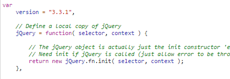
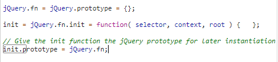
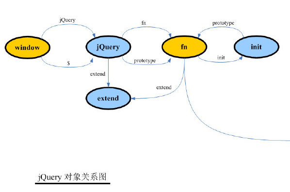

记录前端鼻祖 ———— jquery 的 js 技巧
jquery 对象
在没有 es6 的 Class 之前，js 中都使用 function 以及他的 propotype 来实现面向对象。但是尽管如此，总有人在初始化实例时，忘记加上 new 关键字，这就会造成意外的全局污染。
1 | function Person(name) { |
这就会在你不知情的情况下，定义了一个全局变量。而 jquery 在生成新对象的时候，从来都没有带上 new 关键字，jquery 在创建对象时使用了一个技巧。
1 | function Person(name) { |
使用 new 关键字后，如果函数 return 了一个对象，返回对象，若返回的不是对象则创建一个新对象返回。
在 createPerson 函数返回了一个 new Preson，使得即使不使用 new 关键字也可以创建对象实例，既保证创建对象时的安全，也方便调用。
源码中的代码：

jquery 原型
在使用 jquery 的插件时，在 $.fn 上扩展方法，对象 $() 上就能访问刚刚挂载的方法。
1 | $.fn.log123 = function () { |
再结合上面返回的 $.fn.init 实例，可见 $.fn 就是 $.fn.init.prototype。的确在源码中也做了这样的定义，使得返回的对象可以拿到原型上的方法。

再附上一张 jquery 非常绕的原型图：

###